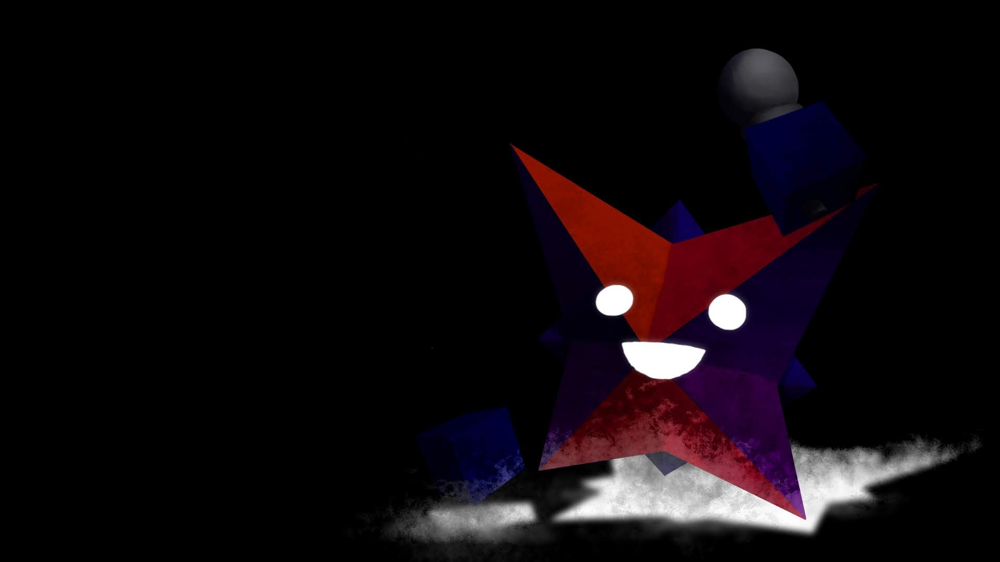
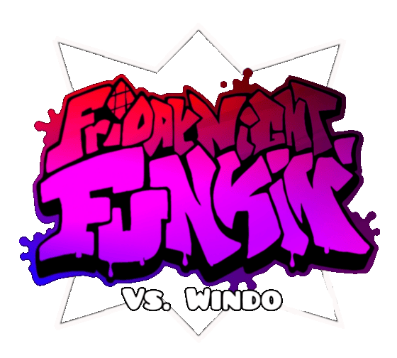

Welcome to the official vs. Windo website!
Here you can find downloads for the mod, previous builds, AND upcoming builds for future updates!
NOTE: Some pages may not display correctly on mobile!


Vs. Windo (formerly named vs. WindowsGod2) is a mod of the indie rhythm game Friday Night Funkin' created by ItzWindo, where you play as Boyfriend (that is his name) and sing in rap battles against the square, Windo!
Currently, there are three weeks, ten story mode songs, and two freeplay songs!
This mod was conceptualized on October 9, 2021 with a few concept art and tracks. In April of 2022, sprites for Windo were made by Phi, which would initiate the project.
Vs. Windo would have its first build finished on June 21, 2022, though its progress was slow and its first official demo would release about 9 months later on March 10, 2023.
Over time, more of the mod would be developed with small updates to the demo releasing from May to October 2024 until its first major release as v2.03 on November 27, 2024.
Work on the next version, v2.1 would be steady. A public build was made for it on February 12, 2025 for anyone to try. However, in December 2025 ItzWindo's laptop got wiped, resulting in the mod being set back to the public demo.
Despite that, work on v2.1 would resume in March of 2026 where ItzWindo would work on the mod by himself until September 29, 2026, where the update was finally released.
This is where the mod sits today, but it's planned to have a version 3 in the future.